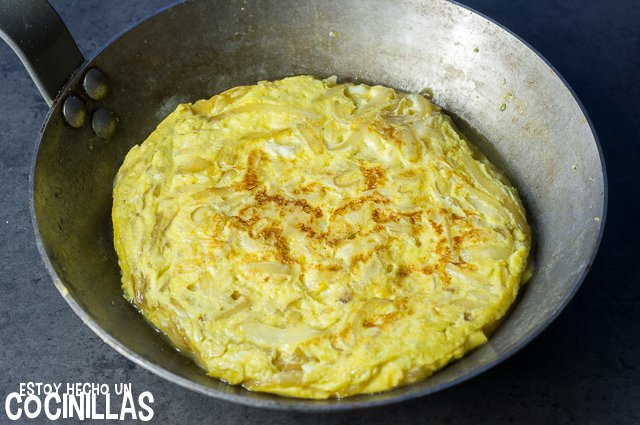

Receta de Tortilla de cebolla
Receta de Tortilla de cebolla

Ingredientes
- 4 huevos camperos
- 2 cebollas amarillas
- 2 cucharadas de aceite de oliva virgen extra
- sal
Elaboración (Pasos)
- Pelar la cebolla y cortarla en juliana.
- En una sartén a fuego medio, poner a calentar el aceite de oliva y añadir la cebolla.
- Sofreír unos 10 minutos más o menos, hasta que se vea que está tierna. Lo mejor es probarla y ver si tiene la textura que queremos. Hay que remover con bastante frecuencia para que no se queme la cebolla que se queda en el fondo de la sartén.
- Cascar los huevos en un plato, añadir media cucharadita de sal o cuatro pizcas de sal (la regla de una pizca por huevo queda bien). Batir.
- Añadir la cebolla pochada a los huevo batidos, mezclar y dejar reposar un par de minutos.
- Volver a poner a calentar la sartén, que se habrá mantenido engrasada después de sacar la cebolla. Si se procuras dejar aceite cuando se saca la cebolla, normalmente no necesitará más. No obstante se considera necesario engrasar un poco más, añadir un pelín más de aceite.
- Cuando la sartén esté bien caliente, añadir los huevos con la cebolla. Cuajar, a fuego medio, 1 minuto o 2 por este lado, luego darle la vuelta ayudándose con un plato y terminar de cuajar por el otro lado 1 minuto más. Con esto se consigue que la tortilla quede jugosa por dentro. Añadir 1 minuto, bajando un poco el fuego, más por cada lado si se desea totalmente cuajada.
VOLVER